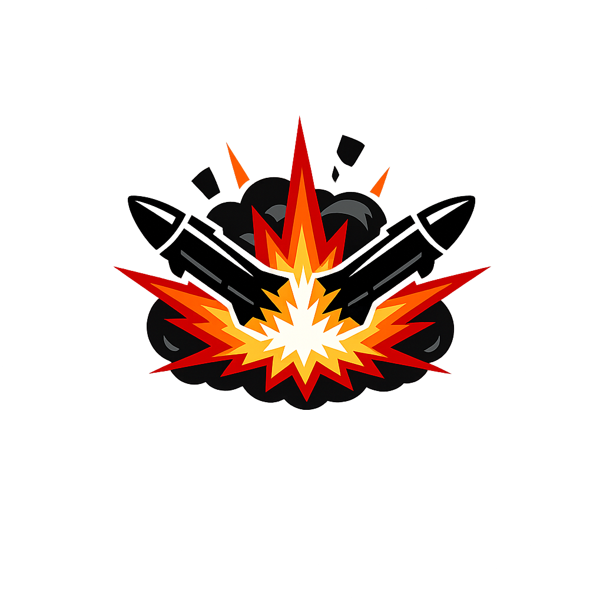

Metai
Rodomas: 2022
Legenda
Vietovės taškas žemėlapyje

Mūšio / įvykio ikona dešinėje nuo vietovės
Gali laisvai zoominti ir stumdyti žemėlapį.
Paspaudus ant battle ikonos atsidarys detalus įvykio aprašymas.
Debug režimas paliktas koordinačių tikslinimui.